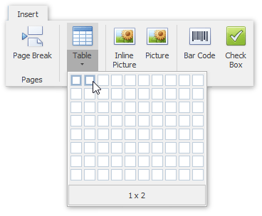
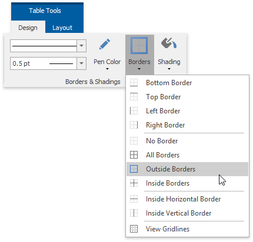
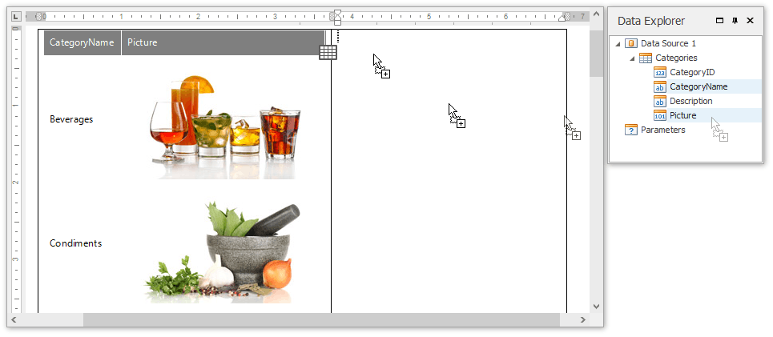
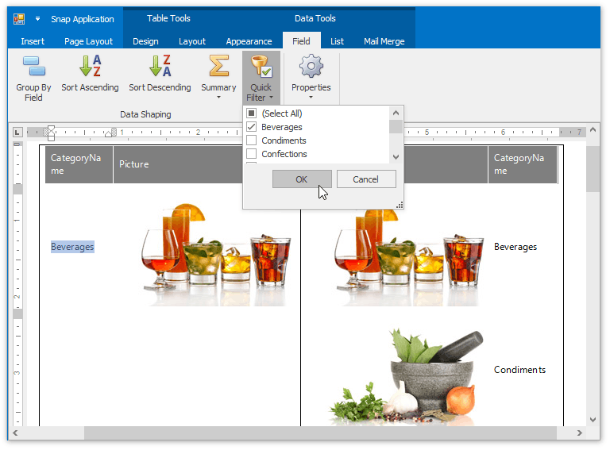
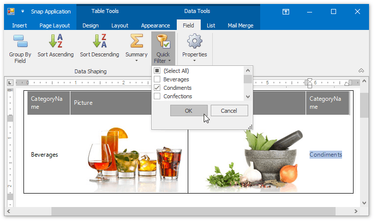

Create a Side-by-Side Report
This tutorial describes the steps used to create a side-by-side report to compare different items within the report.
Follow these steps to create a side-by-side report.
- Create a new Snap document and bind it to the required table as described in the Connect a Document to a Data Source topic.
To add a new table to the report, switch to the Insert tab in the main toolbar and click Table. Then, move the cursor over the grid to select the required number of rows and columns.

You can set table borders by clicking the Borders button on the Design tab.

Then, drop the fields that will be compared from the Data Explorer on the table's corresponding columns.

To filter each table column so that it shows only a single record, select a field on the left column and in the activated Field tab in the main toolbar, click Quick Filter. In the invoked menu, select the required field and click OK.

Finally, repeat the same procedure for the right column, so that it displays a different field to compare it with.
